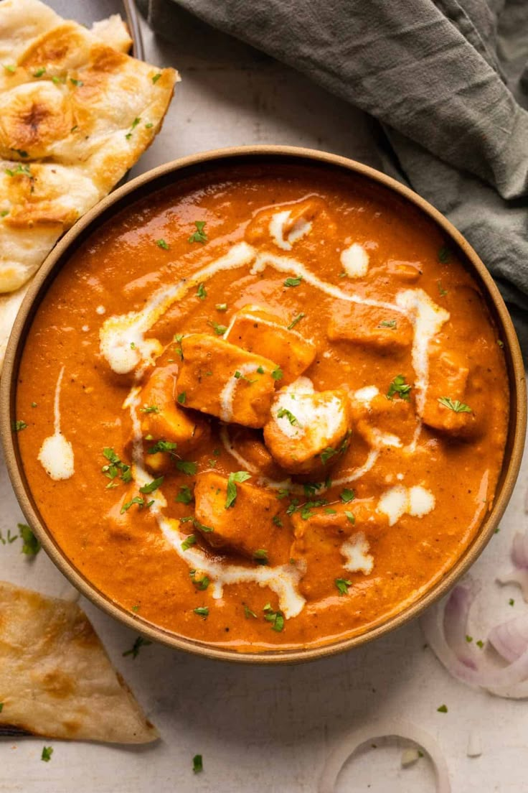

Paneer Butter Masala

Ingredients
- 200g Paneer (cottage cheese)
- 2 Tomatoes (pureed)
- 1 Onion (chopped)
- 1 tbsp Butter
- ½ tsp Turmeric
- 1 tsp Garam Masala
- ½ tsp Red Chili Powder
- Salt to taste
Instructions
- Heat butter in a pan and sauté onions until golden brown.
- Add tomato puree and cook for 5 minutes on medium heat.
- Add all spices and mix well.
- Add paneer cubes and stir gently to coat with masala.
- Simmer for 10 minutes. Garnish with coriander and serve hot with naan or rice.
Aloo Gobi

Ingredients
- 2 Potatoes (cubed)
- 1 small Cauliflower (cut into florets)
- 1 Onion (chopped)
- 2 Tomatoes (chopped)
- ½ tsp Turmeric
- 1 tsp Cumin seeds
- 1 tsp Coriander powder
- ½ tsp Red Chili Powder
- Salt to taste
- Oil for cooking
Instructions
- Heat oil in a pan and add cumin seeds.
- Sauté onions until soft, then add tomatoes and cook until mushy.
- Add spices and mix well.
- Add potatoes and cauliflower, stir, cover, and cook until soft.
- Garnish with coriander and serve hot with roti or rice.
Chole Bhature

Ingredients
- 1 cup Chickpeas (soaked overnight)
- 2 Tomatoes (pureed)
- 1 Onion (chopped)
- 1 tsp Chole Masala
- ½ tsp Turmeric
- 1 tsp Cumin seeds
- Salt to taste
- Oil for cooking
- Ready-made or homemade Bhature
Instructions
- Pressure cook chickpeas until soft.
- Heat oil, add cumin seeds and sauté onions till golden.
- Add tomato puree, chole masala, turmeric, and cook for 5 mins.
- Add cooked chickpeas, mix well, and simmer for 10 mins.
- Serve hot with puffed bhature and sliced onions.